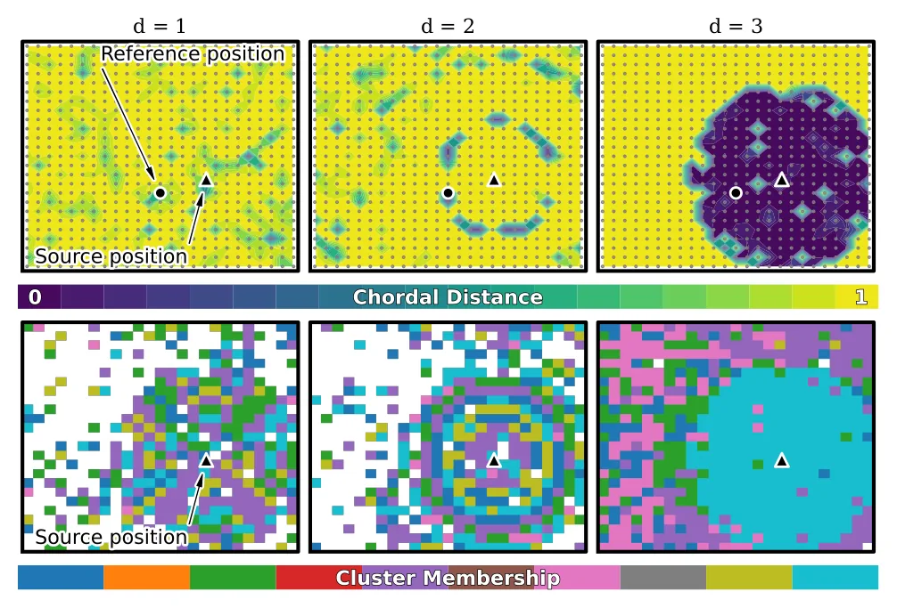
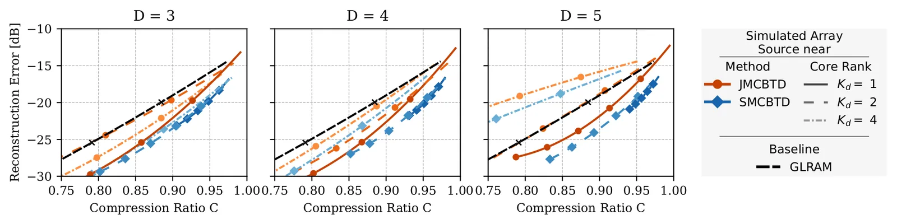

O Problema da Dimensionalidade Acústica
Em processamento de sinais acústicos de salas, a Resposta ao Impulso de Sala (RIR) é fundamental. Ela descreve o caminho acústico ponto a ponto entre uma fonte sonora e um microfone, capturando reflexões, difrações e absorções causadas pela geometria e materiais do ambiente. Para aplicações como localização de fonte, separação de fontes ou realidade virtual, precisamos de múltiplas RIRs. O problema é que, em salas médias, uma RIR pode ter milhares de amostras; em grandes espaços, como catedrais, pode ter centenas de milhares. Representar isso como Filtros de Resposta Finita ao Impulso (FIR) gera uma quantidade massiva de parâmetros, tornando o armazenamento e a convolução em tempo real computacionalmente custosos.
Modelos Polos-Zero e a Conexão com Tensores
Uma alternativa compacta são os modelos de Resposta ao Impulso Infinita (IIR), especificamente o modelo de Polos-Zero (PZ). Esse modelo representa a RIR como uma função de transferência IIR, capturando os modos da sala (ressonâncias) através de seus polos. Uma descoberta chave deste trabalho é a conexão matemática entre o modelo PZ e a Decomposição Poládica Canônica (CPD) de tensores. A CPD é uma forma de decompor um tensor em uma soma de tensores de rank-1. Os autores mostram que as primeiras reflexões da RIR formam uma soma esparsa de rank-1, enquanto a reverberação tardia admite uma CPD onde os fatores são determinados pelos polos do modelo PZ. Isso motiva o uso de decomposições de tensores de ordem superior para compressão.

Decomposição de Termos em Blocos (BTD) e Esquemas Propostos
Para explorar essa estrutura, os autores propõem duas esquemas de compressão multicanal baseados na Decomposição de Termos em Blocos (BTD). A BTD é uma generalização da CPD, onde o tensor é decomposto em uma soma de blocos, cada um sendo um produto de matrizes de fatores e um núcleo (core). O primeiro esquema, SMCBTD (Stacked Multichannel BTD), aplica a decomposição diretamente a um tensor de (D+1) modos, empilhando os canais. O segundo, JMCBTD (Joint Multichannel BTD), é mais sofisticado: ele identifica subconjuntos de canais acusticamente similares e compartilha fatores entre eles. Essa similaridade é descoberta usando clustering espectral em grafos de afinidade de subespaços de fatores, como ilustrado na Figura 1, onde canais próximos em termos acústicos são agrupados para compartilhar informação.
Otimização via HOOI
A otimização desses modelos é feita através de um procedimento iterativo chamado Higher-Order Orthogonal Iteration (HOOI). O HOOI é uma extensão da decomposição em valores singulares (SVD) para tensores. Ele alterna entre a atualização dos fatores de cada modo e a projeção do tensor original para o núcleo (core). No caso do JMCBTD, o algoritmo trabalha com conjuntos de trabalho menores devido ao clustering, o que reduz a necessidade de memória intermediária e melhora a escalabilidade para um grande número de canais. A escolha da ordem de tensorização D (número de modos além do tempo) é crítica. Os autores testam D=3, D=4 e D=5, buscando o ponto ideal entre complexidade e precisão.

Avaliação Experimental e Resultados
Os autores avaliaram os métodos em dados simulados e reais. Nos dados simulados de um array compacto, o JMCBTD e o SMCBTD mostraram erro de reconstrução consistentemente menor que o método GLRAM (Generalized Low-Rank Approximation of Matrices) e decomposições unicanal separadas. O ganho foi mais pronunciado com núcleos escalares (Kd=1), o que apoia a hipótese de que a CPD (caso especial da BTD) é a representação mais eficiente para dados acústicos típicos. A Figura 4 ilustra essa vantagem, mostrando que para a mesma taxa de compressão, o erro em dB é significativamente menor nos métodos propostos.
Datasets Reais: SMARD, SRIRACHA e ChurchIR
Nos datasets reais, o ganho foi ainda mais claro. No SMARD (arrays compactos em sala pequena), o JMCBTD com D=3 e Kd=1 apresentou ganho de 8 a 10 dB no erro de reconstrução sobre o GLRAM. No SRIRACHA (sala tipo caixa com posições densas), o ganho foi de 5 a 8 dB. Um achado importante é que o aumento da ordem de tensorização de D=2 para D=3 traz melhorias significativas, mas de D=3 para D=4 ou 5, os ganhos são marginais na maioria dos cenários. Isso sugere que D=3 é um 'ponto doce' prático, capturando a estrutura multilinear essencial sem custo computacional excessivo. A exceção foi o dataset ChurchIR, onde D=4 mostrou ganho adicional, possivelmente devido à maior densidade modal em ambientes altamente reverberantes.
Eficiência Downstream e Precisão Reduzida
Um benefício crucial da compressão não é apenas o tamanho do arquivo, mas a eficiência da convolução downstream. Modelos comprimidos via CPD/BTD permitem algoritmos de convolução mais rápidos, comparáveis aos do GLRAM. Além disso, os experimentos de precisão de ponto flutuante mostraram que os modelos podem ser armazenados em 16-bit (half-precision) com erro de reconstrução negligenciável. Isso torna a técnica compatível com hardware moderno de áudio e inferência. A quantização agressiva para 8-bit foi mais sensível ao formato, indicando que o futuro trabalho deve otimizar a robustez a baixas precisões.
Limitações e Trabalhos Futuros
O paper reconhece limitações. O clustering em duas etapas do JMCBTD pode não ser ótimo; uma abordagem de clustering em um único passo seria desejável. Além disso, a detecção de rank multilinear foi tratada como hiperparâmetro fixo, enquanto um método data-driven seria mais robusto. A performance do JMCBTD depende da existência de grupos de canais similares; se não houver estrutura clara, o ganho pode ser menor. O trabalho atual não cobre a otimização de quantização 8-bit, deixando isso para futuras extensões. Apesar disso, o estudo estabelece uma base sólida para compressão acústica baseada em tensores.
Conclusão
Os autores demonstram que a decomposição de tensores de ordem superior, especificamente a BTD e sua variante conjunta JMCBTD, oferece uma maneira eficaz de comprimir RIRs multicanal. Ao explorar a estrutura de baixa rank implícita nos modelos de polos-zero, eles alcançam erros de reconstrução menores que métodos de matriz tradicionais como o GLRAM. A ordenação D=3 emerge como o equilíbrio ideal entre precisão e custo. Esses modelos comprimidos não só economizam armazenamento, mas também habilitam convolução eficiente e suporte a precisão reduzida, sendo promissores para aplicações em tempo real em ambientes virtuais e sistemas de áudio multicanal.
O que fica
- RIRs longos podem ser representados compactamente usando modelos de polos-zero, que implicam estrutura de baixa rank em tensores.
- O método JMCBTD agrupa canais similares via clustering espectral, compartilhando fatores para melhorar a compressão conjunta.
- Ordenação tensorial D=3 oferece o melhor equilíbrio entre ganho de precisão e custo computacional na maioria dos cenários.
- Modelos comprimidos permitem convolução eficiente downstream e suportam armazenamento em precisão reduzida (16-bit).
Paper original: Joint Higher-Order Low-Rank Tensor Decompositions for Multichannel Acoustic System Compression
Comentários
Nenhum comentário ainda. Seja o primeiro.